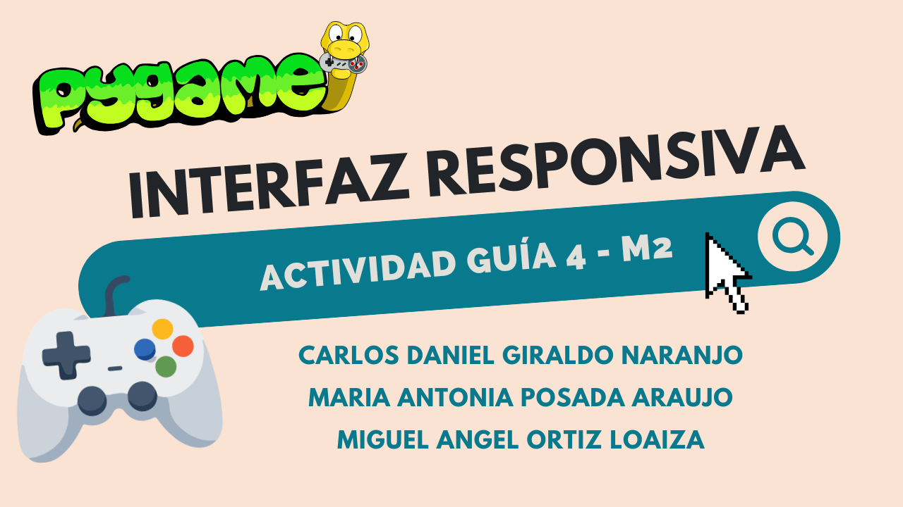

Desarrollo de juegos 2D con la libreria de Pygame

Introducción a Pygame
¿Qué es Pygame
Pygame es una libreria del lenguaje de programación Python, pensada para crear aplicaciones multimedia y videojuegos 0D. Esta librería está basada en la biblioteca SDL (Simple DirectMedia Layer), lo que le permite ejecutarse en cualquier sistema que tenga soporte para esta biblioteca (Windows, Linux, MacOS y otros). Pygame ofrece una variedad de diferentes módulos y herramientas que permiten crear y manejar ventanas, elementos gráficos, colisiones, eventos, imágenes sonidos, entre muchas otras cosas.
Ventajas de Pygame sobre otras alternativas de desarrollo 2D
Una de las principales características que hacen destacar a Pygame sobre alternativas como Pyglet o librerías de otros lenguajes como Raylib es su facilidad de uso. Gracias a la sintaxis simple del lenguaje de programación Python y a que Pygame está basado en SDL, muchos de los conceptos más abstractos y de bajo nivel, como el manejo de sonido, memoria gráfica o eventos le permiten al desarrollador enfocarse principalmente en desarrollar la lógica de la aplicación, sin generar una curva de aprendizaje tan compleja.
Otra de las razones por las que Pygame es una opción bastante conveniente es su multiplataforma nativa y su bajo impacto en los recursos del sistema, gracias a ser esencialmente una envoltura de SDL. Además, Pygame cuenta con una comunidad enorme de desarrolladores que crean documentación, recursos educativos, tutoriales y ejemplos.
Instalación de la librería y el entorno
Instalar la librería usando un gestor de paquetes (pip, conda, uv), es recomendable instalar el paquete pygame.ce, es un fork creado por la comunidad que tiene varios cambios por delante de la librería normal.
pip install pygame-ce
conda install pygame-ce
uv install pygame-ce
De esta forma, Pygame se instalará de forma global en el sistema, sin embargo, en sistemas como linux, donde Python es una dependencia interna del sistema, es mejor crear un entorno virtual dentro del directorio de trabajo e instalar la dependencia allí dentro.
python3 -m venv venv
source venv/bin/activate
pip install pygame-ce
Estructura básica de un programa en Pygame
La gran mayoría de programas de Pygame tienen el siguiente esqueleto(no es necesario importar explícitamente pygame-ce):
import pygame
import sys
# Inicialización
pygame.init()
# Configuración de la ventana
ANCHO, ALTO = 800, 600
pantalla = pygame.display.set_mode((ANCHO, ALTO))
pygame.display.set_caption("Mi primer juego")
# Reloj para controlar los FPS
reloj = pygame.time.Clock()
# Bucle principal (game loop)
corriendo = True
while corriendo:
# 1. Manejo de eventos
for evento in pygame.event.get():
if evento.type == pygame.QUIT:
corriendo = False
# 2. Lógica del juego (actualizar posiciones, colisiones, etc.)
# 3. Dibujar en pantalla
pantalla.fill((0, 0, 0)) # limpiar pantalla con color negro
pygame.display.flip() # actualizar la pantalla
reloj.tick(60) # limitar a 60 FPS
pygame.quit()
sys.exit()
Este esqueleto se encarga de hacer una variedad de pasos para asegurar que la aplicación funcione: en primer lugar se inicializa Pygame, paso necesario para acceder a sus utilidades; se configura la ventana, el ancho, alto y el título que se va a mostrar; se crea un reloj para limitar los cuadros por segundo que Pygame tiene permitido dibujar, lo que permite mantener el juego consistente en diferentes dispositivos que pueden variar en potencia de cómputo; la creación del game loop o ciclo de juego, este ciclo se encarga de realizar una serie de acciones cada vez que se pinta la ventana del juego, como pintar objetos, fondos o animaciones; finalmente se cierra pygame y se le envía una señal de exit al sistema para eliminar la ventana del juego cuando ya no es requerida.
Ciclo de juego
El ciclo de juego (o game loop) es la estructura central de cualquier programa hecho con Pygame. Se trata de un bucle que se repite constantemente, decenas de veces por segundo, y que en cada repetición realiza tres tareas principales: capturar los eventos del usuario (teclado, mouse, cierre de ventana), actualizar la lógica del juego (posiciones, físicas, puntuación) y finalmente dibujar todo en pantalla. Sin este ciclo, la ventana se abriría y se cerraría de inmediato, ya que el programa terminaría su ejecución en el primer fotograma.
Estructura del bucle principal
Un ciclo de juego típico en Pygame se apoya en un objeto Clock, que permite controlar la
velocidad de ejecución del programa limitando los fotogramas por segundo (FPS).
reloj = pygame.time.Clock()
corriendo = True
while corriendo:
# 1. Manejo de eventos
for evento in pygame.event.get():
if evento.type == pygame.QUIT:
corriendo = False
# 2. Lógica del juego
# (actualizar posiciones, detectar colisiones, etc.)
# 3. Dibujado
pantalla.fill((0, 0, 0))
pygame.display.flip()
# 4. Control de velocidad (FPS)
reloj.tick(60)
¿Por qué es importante el orden?
Procesar primero los eventos garantiza que la lógica del juego reaccione a la entrada más reciente del usuario, y dibujar al final asegura que en pantalla se muestre siempre el estado más actualizado antes de pasar al siguiente fotograma.
Dibujar elementos
El módulo de pygame.draw
Pygame incluye el módulo draw, que permite dibujar formas geométricas básicas
directamente sobre una superficie (Surface), como la pantalla del juego. Cada función
recibe la superficie destino, un color en formato RGB y las coordenadas o dimensiones de la forma
# Rectángulo: superficie, color, (x, y, ancho, alto)
pygame.draw.rect(pantalla, (255, 0, 0), (100, 100, 50, 50))
# Círculo: superficie, color, (centro_x, centro_y), radio
pygame.draw.circle(pantalla, (0, 255, 0), (400, 300), 40)
# Línea: superficie, color, punto_inicio, punto_fin, grosor
pygame.draw.line(pantalla, (255, 255, 255), (0, 0), (800, 600), 5)
Colores en formato RGB
Los colores en Pygame se definen como tuplas de tres valores (R, G, B), donde cada
componente (rojo, verde y azul) va de 0 a 255. Por ejemplo, (0, 0, 0) representa negro
y (255, 255, 255) representa blanco.
Superficies (Surface)
Toda imagen o forma en Pygame se dibuja sobre una Surface, que puede pensarse como un
lienzo. La propia ventana del juego, creada con pygame.display.set_mode(), es en
realidad una Surface. También se pueden crear superficies adicionales, útiles para
agrupar elementos o aplicar transparencias.
superficie = pygame.Surface((100, 100))
superficie.fill((0, 150, 255))
pantalla.blit(superficie, (200, 200))
Eventos de teclado
Dos formas de capturar el teclado
Pygame ofrece dos maneras de reaccionar a la entrada del teclado: mediante el sistema de eventos
(pygame.event.get()), útil para acciones puntuales como saltar o pausar, y mediante
pygame.key.get_pressed(), útil para movimientos continuos mientras una tecla permanece
presionada.
Eventos puntuales (KEYDOWN / KEYUP)
for evento in pygame.event.get():
if evento.type == pygame.QUIT:
corriendo = False
if evento.type == pygame.KEYDOWN:
if evento.key == pygame.K_SPACE:
print("Salto")
if evento.type == pygame.KEYUP:
if evento.key == pygame.K_SPACE:
print("Tecla soltada")
Movimiento continuo con get_pressed()
Para un movimiento fluido, como desplazar un personaje mientras se mantiene una tecla presionada, conviene revisar el estado del teclado en cada fotograma en lugar de depender de eventos puntuales.
x, y = 400, 300
velocidad = 5
teclas = pygame.key.get_pressed()
if teclas[pygame.K_LEFT]:
x -= velocidad
if teclas[pygame.K_RIGHT]:
x += velocidad
if teclas[pygame.K_UP]:
y -= velocidad
if teclas[pygame.K_DOWN]:
y += velocidad
Colisiones
El objeto Rect
La forma más común de detectar colisiones en Pygame es mediante el objeto pygame.Rect,
un rectángulo definido por una posición (x, y) y unas dimensiones (ancho, alto). Además de servir
para colisiones, los objetos Rect también se utilizan para posicionar imágenes y
elementos gráficos.
jugador = pygame.Rect(100, 100, 50, 50)
enemigo = pygame.Rect(300, 300, 50, 50)
if jugador.colliderect(enemigo):
print("Colisión detectada")
Colisiones con múltiples objetos
Cuando se necesita comprobar la colisión de un objeto contra varios a la vez (por ejemplo, una bala
contra una lista de enemigos), Pygame ofrece funciones auxiliares como collidelist() y
collidelistall(), que evitan escribir un bucle manual de comparaciones.
bala = pygame.Rect(150, 150, 10, 10)
enemigos = [
pygame.Rect(140, 140, 30, 30),
pygame.Rect(400, 400, 30, 30),
]
indice = bala.collidelist(enemigos)
if indice != -1:
print(f"Colisión con el enemigo número {indice}")
Grupos de sprites (Group)
Para proyectos más grandes, Pygame ofrece la clase pygame.sprite.Group, que organiza
objetos Sprite y permite comprobar colisiones entre grupos completos con funciones como
pygame.sprite.spritecollide(), simplificando juegos con muchos elementos en pantalla.
Ejemplo práctico
Aquí hay un ejemplo de un juego en 2d desarrollado con Pygame: